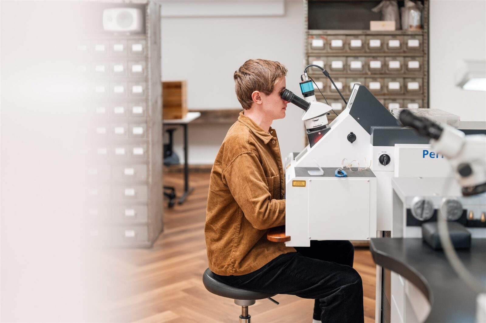
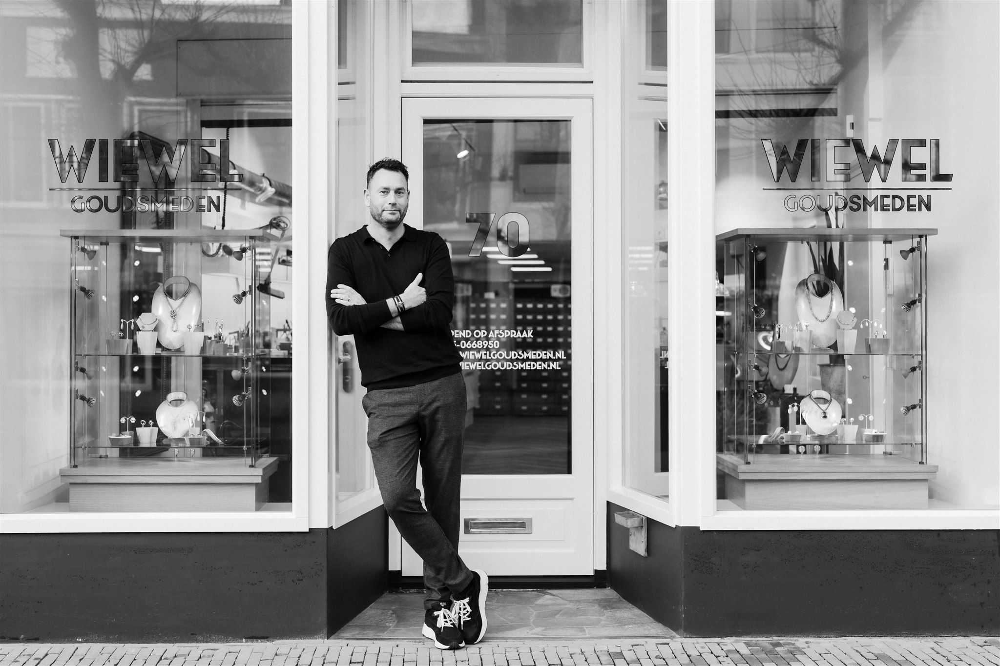
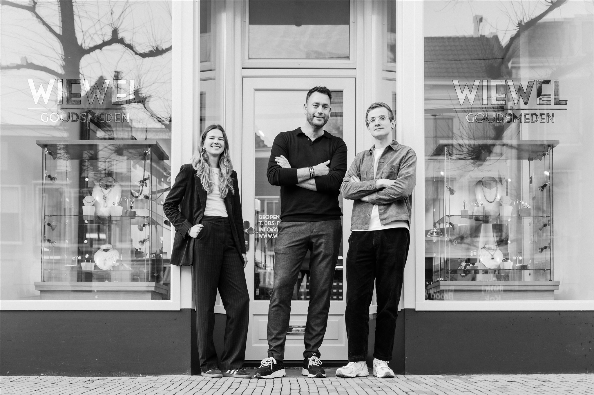

Reparatie
Van het solderen van gebroken kettingen tot het vervangen van verloren stenen. Onze ervaren goudsmeden herstellen uw sieraad met de grootste zorg.
Meer over reparatieOntdek de tijdloze schoonheid van handgemaakte sieraden bij Wiewel Goudsmeden. Twee generaties vakmanschap, traditioneel ambacht en eigentijds design.


Bij Wiewel Goudsmeden gaat het om meer dan sieraden. Sinds 1980 combineert ons familiebedrijf traditioneel vakmanschap met eigentijds design. Opgericht door Matthieu Wiewel, nu voortgezet door zoon Thijs als meestergoudsmid.
Lees ons verhaalSamen bespreken we uw ideeën, stijlvoorkeuren en specifieke verzoeken.
Onze ervaren goudsmeden creëren een uniek ontwerp dat uw persoonlijkheid weerspiegelt.
Met traditionele en moderne technieken en hoogwaardige materialen wordt elk detail perfect uitgevoerd.
Uw sieraad wordt met zorg verpakt en klaargemaakt voor overhandiging.

Van het solderen van gebroken kettingen tot het vervangen van verloren stenen. Onze ervaren goudsmeden herstellen uw sieraad met de grootste zorg.
Meer over reparatie
Specialisten in het restaureren van antieke juwelen. We herstellen kostbare stukken in hun oorspronkelijke glorie met respect voor authenticiteit.
Meer over restauratie